Construcción
RAMBO
Convierte el alcance autorizado en código, integra el producto y prepara evidencia de su comportamiento.
Full Stack Dev Sr. | Applied AI & Agentic Systems Engineer | QA Sr. | BI
Diseño y desarrollo soluciones de software de extremo a extremo, garantizando calidad, escalabilidad y resultados medibles. Integro ingeniería Full Stack, inteligencia artificial aplicada, sistemas agénticos y Business Intelligence para automatizar procesos, potenciar productos y transformar datos en decisiones. A través de StarBound Software Factory y DEVGEP+ V9, combino la autonomía de agentes especializados con supervisión humana, seguridad y control de calidad en cada etapa.
Contribuciones GitHub
Últimos 12 meses
Arquitectura y desarrollo
De punta a punta
Pruebas y evidencia
Antes de cada entrega
Análisis y Business Intelligence
Para decidir con criterio
Full Stack · QA · Data & BI
Usa las flechas para explorar las tecnologías. El movimiento se detiene al interactuar. También puedes pausarlo con el botón.
Arquitectura Full Stack. Calidad de software. Análisis de datos.
Detecto vacíos en sectores desatendidos: gestión pastoral para iglesias, contabilidad fiscal dominicana, participación cívica y pagos para la economía informal.
Arquitecturas multi-tenant y multi-país, con permisos explícitos, separación de responsabilidades y validación del aislamiento.
Pienso como analista y arquitecto. Primero se define la SSoT, las relaciones ACID y las reglas de negocio; luego se cincela la interfaz de usuario.
Dirijo la construcción con rigor de equipo: control de versiones, compuertas de aislamiento y evidencia observable antes de cualquier release.
Contribuciones en los últimos 12 meses
Actualizado automáticamente el 15 de noviembre de 2026, según el gráfico de contribuciones de mi perfil de GitHub.
Verificar perfil en GitHubStarBound Software Factory · DEVGEP+ V9
Una evolución metodológica que reúne construcción, calidad, seguridad y diseño. La inteligencia artificial ejecuta dentro de un módulo autorizado; la dirección, el criterio y las decisiones siguen siendo humanos.
Dirección humana
Guillermo Estefan PuelloDefine el producto, el alcance y los límites de cada módulo. Decide sobre riesgos, datos reales y publicación. Los agentes aportan ejecución y revisión; la autoridad permanece en el Director.
Construcción
Convierte el alcance autorizado en código, integra el producto y prepara evidencia de su comportamiento.
Calidad
Contrasta la entrega con los criterios de aceptación. Revisa casos, regresiones y evidencia observable.
Seguridad
Examina controles, exposición de datos y riesgos técnicos de forma proporcional a cada cambio.
Diseño y experiencia
Revisa identidad visual, interacción, accesibilidad y fidelidad en la experiencia real del producto.
Resultado esperado, límites, operaciones permitidas y criterios de aceptación.
Primera integración funcional sobre la que desarrollar el resto del módulo.
Pruebas proporcionales y revisión independiente de calidad, seguridad y experiencia.
La entrega local y la salida a producción conservan controles separados.
Trabajo por módulos, cuatro roles especializados y gobernanza con dirección humana.
Este portafolio integra una vitrina estática, recursos locales y un contador automatizado de contribuciones.
Se declaran por entrega y entorno, con pruebas y evidencia. La existencia de un rol o un documento no certifica su operación.
MANIN forma parte del recorrido histórico en Claude Code. La formación actual de esta fábrica está compuesta por RAMBO, LUPA, HK y LEONARDO.
Explora la gobernanza
Selecciona una situación. Este simulador es ilustrativo: no ejecuta operaciones ni concede autorizaciones.
Verde · Dentro del módulo autorizado
Lectura, edición local y pruebas permitidas por el módulo. Cada entrega conserva su evidencia y sus límites.
La autonomía depende de la autorización vigente.
Ejemplo de una compuerta humana. La siguiente acción solo modifica esta demostración.
Trabajo seleccionado · StarBound
Doce proyectos. Distintas etapas de un mismo oficio: convertir una necesidad en software con criterio.
Organización de comunidades de fe, seguimiento y Business Intelligence pastoral.
Next.js 15 · NestJS · TypeScript · PostgreSQL · Prisma
Capturas reales · Datos ficticios
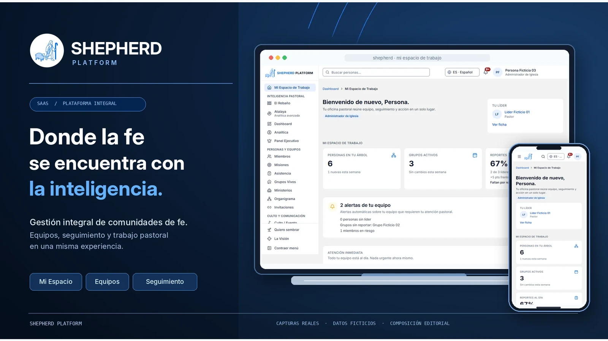
Producción · SaaS · Comunidad
Mi rol: arquitectura, desarrollo y aseguramiento de calidad. Arquitectura multi-tenant y seguimiento de equipos y comunidades.
Next.js 15 · NestJS · TypeScript · PostgreSQL · Prisma · Redis · BullMQ · Tailwind CSS · Stripe · Mapbox GL · Cloudflare R2 · Vercel · Render
Capturas reales con datos ficticios. Sus cifras son ilustrativas; no se presentan como resultados reales. Repositorio privado.
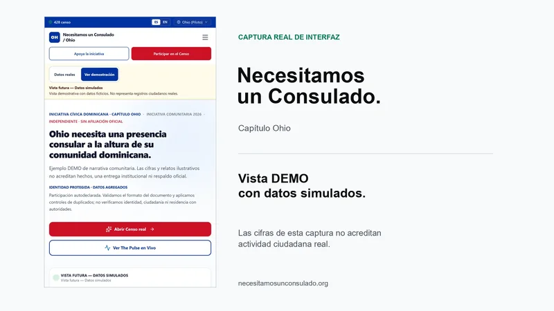
Iniciativa cívica dominicana del capítulo Ohio para fundamentar la demanda consular.
Tecnologías por documentar.
Captura real · Vista DEMO
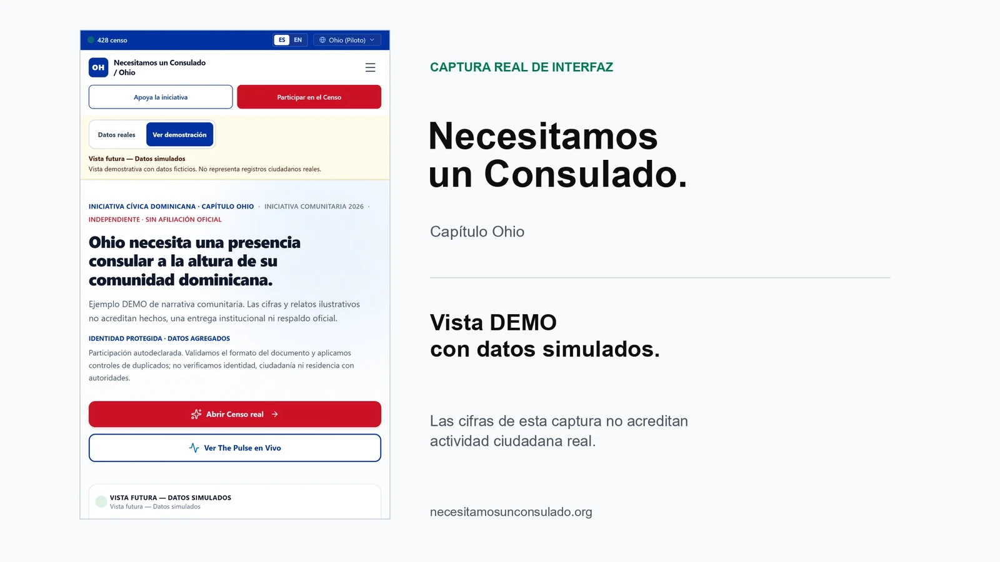
Producción · Cívica · Comunidad
Censo comunitario y datos agregados, con privacidad protegida. Desarrollado con RAMBO. La captura corresponde a la vista demostrativa de la interfaz.
No se publica un stack específico hasta disponer de evidencia del proyecto.
Vista DEMO con datos simulados. Las cifras de la captura no acreditan actividad ciudadana real. No hay repositorio público acreditado.
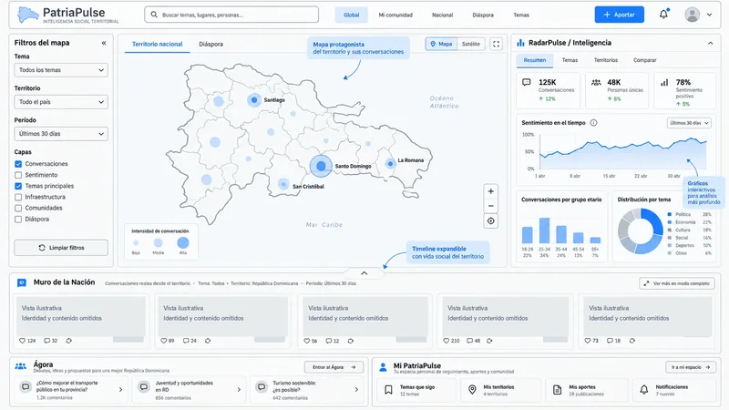
Participación ciudadana y consenso público, con una propuesta neutral y sin fines partidistas.
Tecnologías por documentar.
Captura del dashboard · Datos ilustrativos
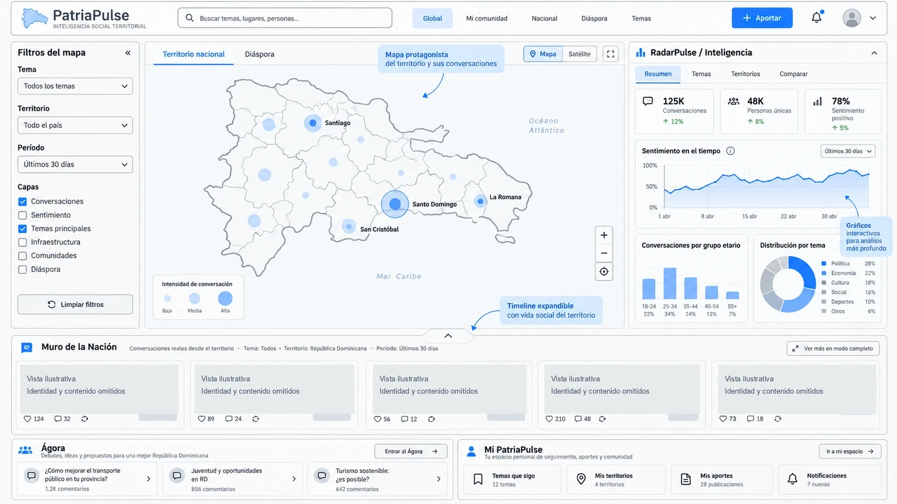
Demo · Cívica · Participación
Propuesta concebida con arquitectura multi-país. La portada muestra el diseño del dashboard y mapa aprobado por el Director; la segunda imagen presenta el concepto móvil Panorama y Muro.
No se publica un stack específico hasta disponer de evidencia del proyecto.
Imágenes del diseño del producto aprobadas por el Director. Las métricas, usuarios e interacciones mostradas son ilustrativos; no son datos reales verificados ni resultados acreditados. El concepto móvil no acredita una implementación móvil. No hay repositorio público acreditado.
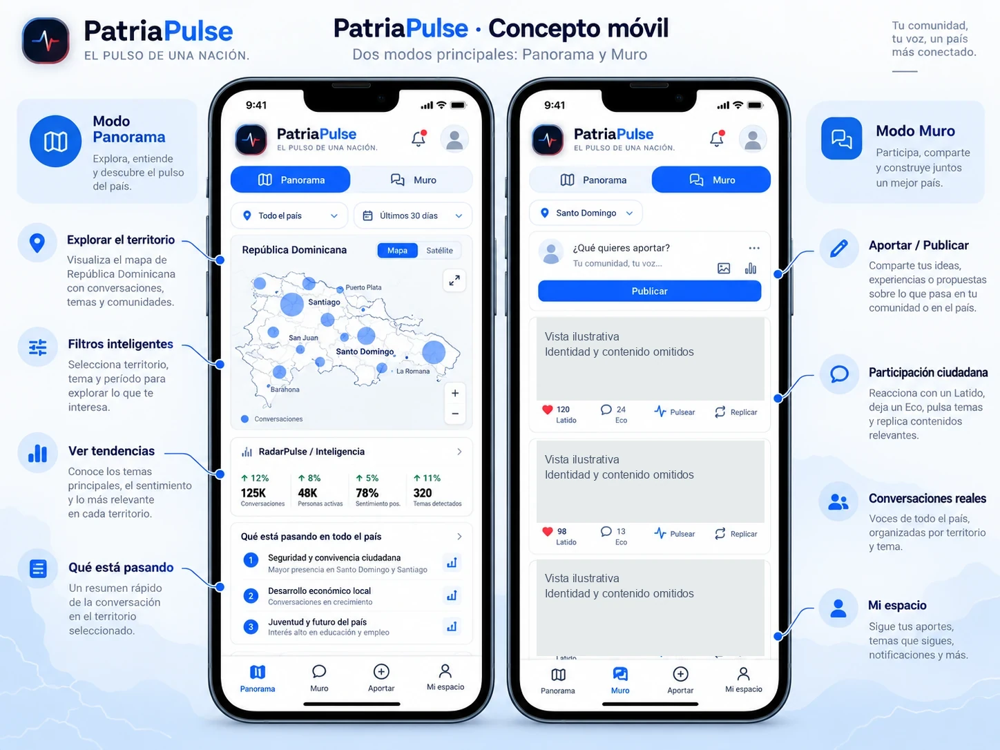
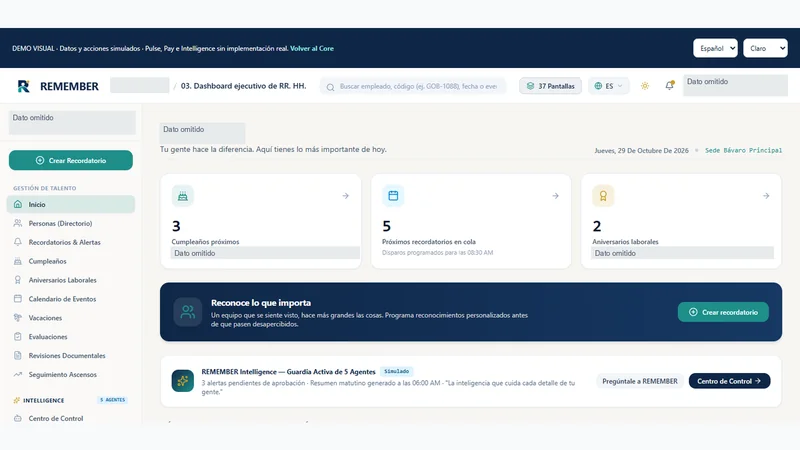
Diseño de una experiencia de recursos humanos centrada en las personas y sus momentos importantes.
Tecnologías por documentar.
DEMO visual · 30 oct 2026
Sin demo ni repositorio público acreditado.
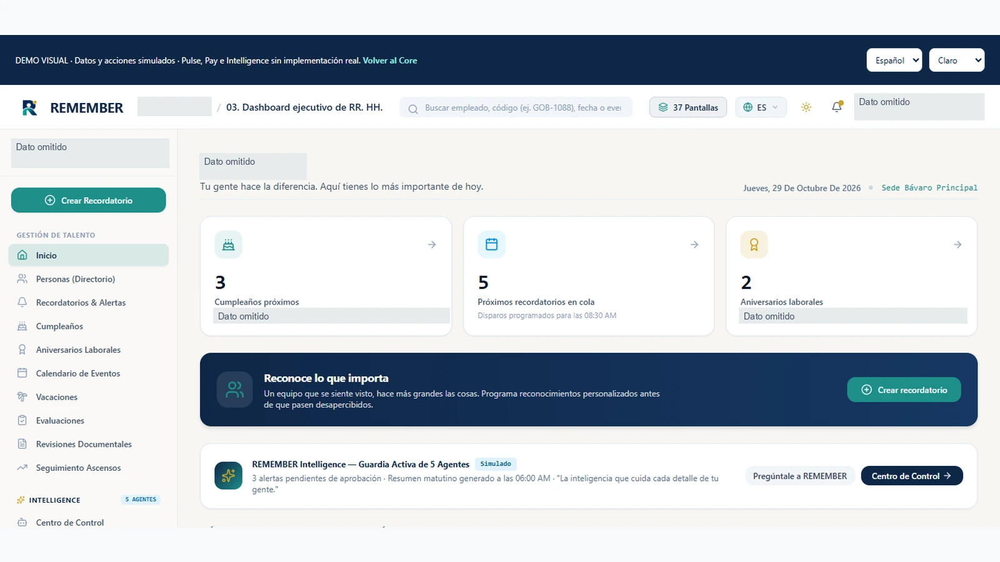
En desarrollo · SaaS · Recursos humanos
En desarrollo. Dashboard ejecutivo, REMEMBER Pulse y REMEMBER Intelligence se presentan mediante una DEMO VISUAL del 30 de octubre de 2026. Las pantallas documentan el diseño demostrativo; no acreditan funciones implementadas o probadas. Pulse e Intelligence no tenían integración real al corte de esas capturas.
No se publica un stack específico hasta disponer de evidencia del proyecto.
Datos y acciones ilustrativos. Recortes y máscaras excluyen nombres, nóminas y alertas personales; no se publican empleados ni clientes reales. No se afirma implementación de los módulos mostrados. La identidad REMEMBER se utiliza como referencia gráfica autorizada.
Sin demo ni repositorio público acreditado.
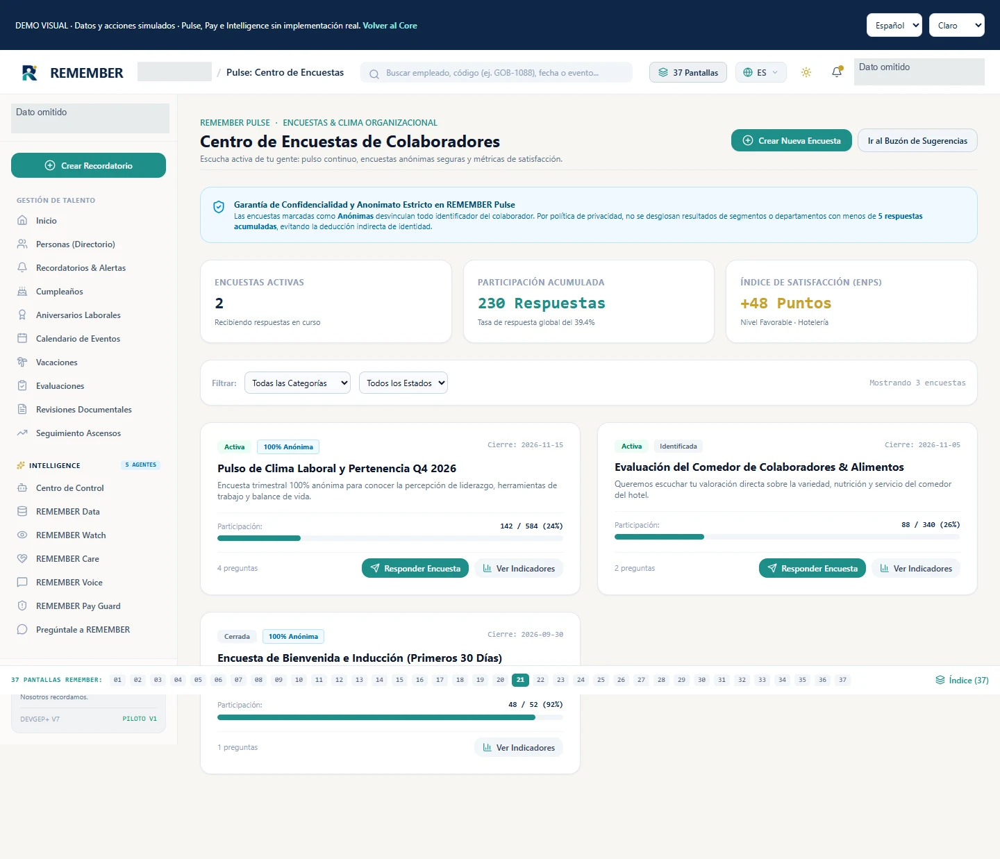
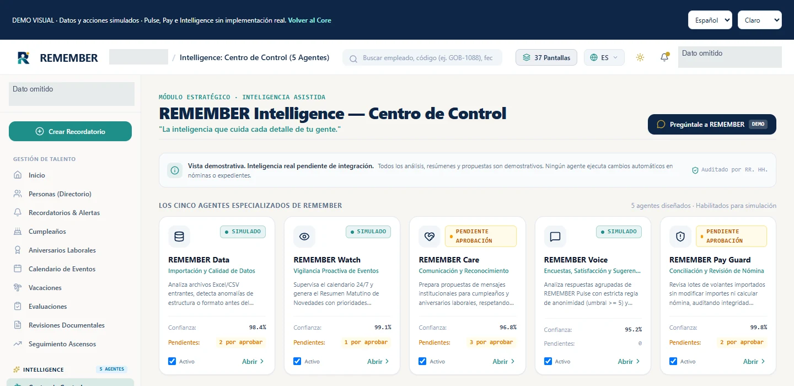
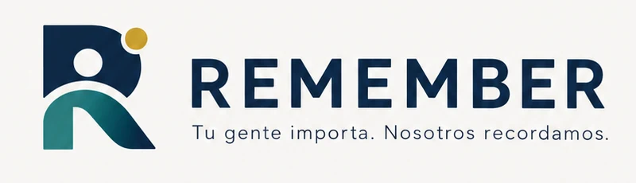
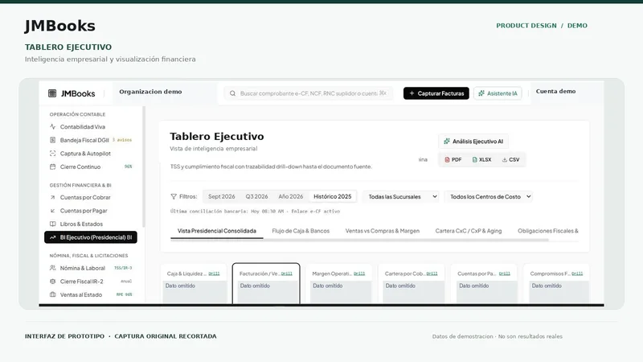
Prototipo de inteligencia contable, fiscal y empresarial para República Dominicana.
Tecnologías por documentar.
Prototipo visual · Datos ilustrativos
Sin demo ni repositorio público acreditado.
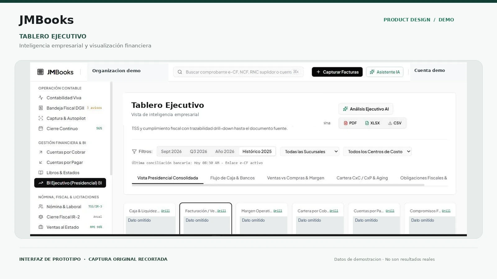
En desarrollo · SaaS · Contabilidad
En desarrollo. Capturas de un prototipo de Google AI Studio, adaptadas visualmente para el portafolio. La galería presenta tablero ejecutivo, gestión fiscal y cierre IR-2, licitaciones y ventas al Estado, y cumplimiento empresarial. No acredita software de producción, operaciones, cálculos fiscales ni funcionalidades implementadas y probadas.
No se publica un stack específico hasta disponer de evidencia del proyecto.
Datos ilustrativos. Identificadores fiscales e importes de origen no acreditado se han ocultado irreversiblemente en estas copias. No se incluyen recibos de nómina, contratos ni propuestas económicas. Las imágenes no son evidencia de resultados reales ni validación fiscal.
Sin demo ni repositorio público acreditado.
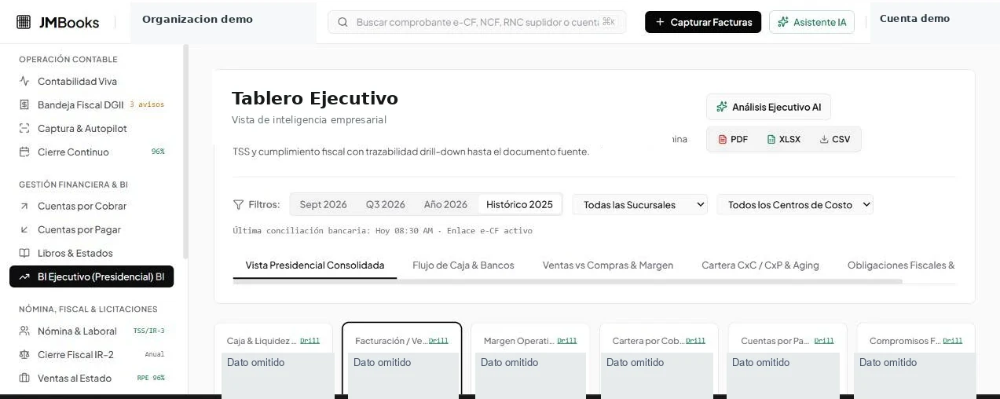
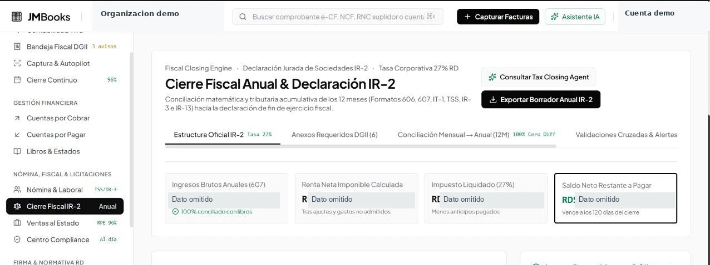
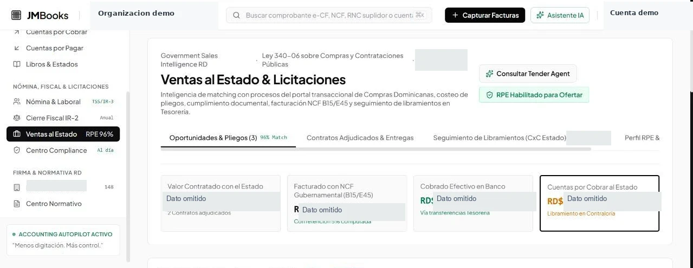
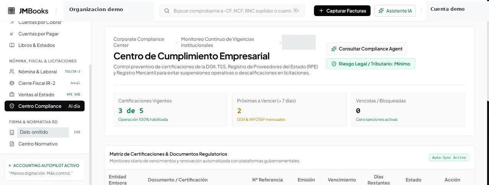
StarBound Prospect Engine: prospección comercial con inteligencia geoespacial.
Tecnologías por documentar.
Presentación conceptual
Sin demo ni repositorio público acreditado.
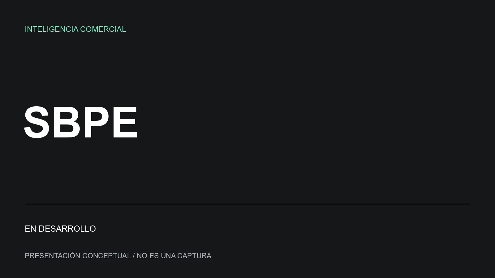
En desarrollo · Inteligencia comercial
Propuesta de detección, clasificación y priorización de prospectos comerciales y propuestas asistidas por IA. Desarrollo propietario de StarBound.
No se publica un stack específico hasta disponer de evidencia del proyecto.
Presentación conceptual tipográfica; no es una captura de producto.
Sin demo ni repositorio público acreditado.
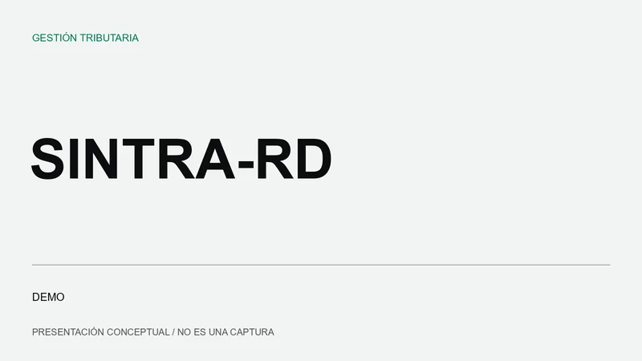
Transformación y gestión tributaria dominicana con reglas fiscales configurables.
C# · .NET 9
Presentación conceptual
Demo · Gestión tributaria
Solución de transformación y gestión tributaria. El estado Demo procede del portafolio anterior; en esta misión se verifica el repositorio público, no una aplicación desplegada.
C# · .NET 9
Presentación conceptual tipográfica; no es una captura de producto.
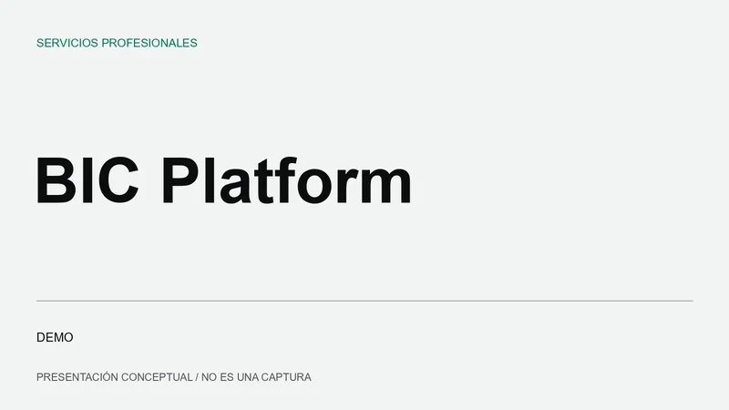
Propuesta estratégica y demo para servicios de interpretación y traducción.
Next.js · TypeScript
Presentación conceptual
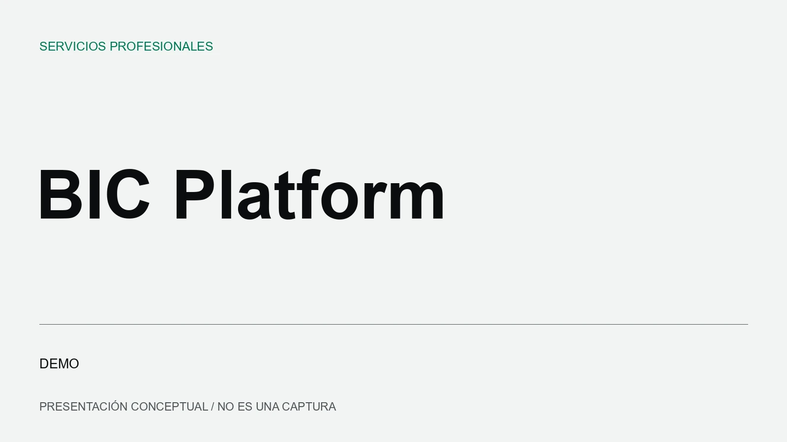
Demo · Servicios profesionales
Demo web corporativa documentada. El repositorio público corresponde a BIC Platform; no se acredita un despliegue público adicional.
Next.js · TypeScript
Presentación conceptual tipográfica; no es una captura de producto.
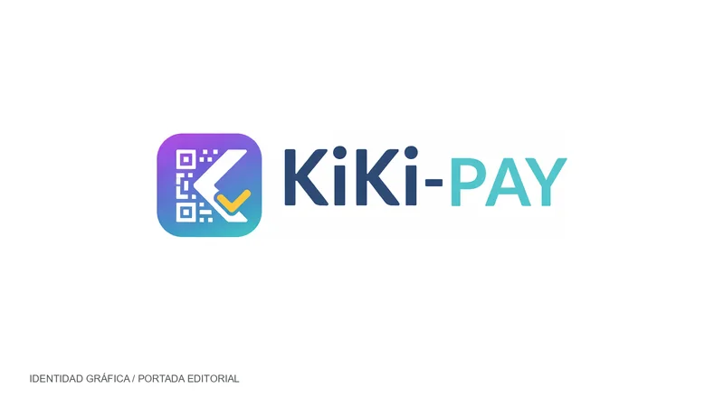
Propuesta de pagos QR y billetera digital para pequeños comerciantes.
Tecnologías por documentar.
Identidad gráfica · Portada editorial
Sin demo ni repositorio público acreditado.
En desarrollo · Fintech · Economía local
Proyecto en desarrollo orientado a la economía informal dominicana. La portada usa la identidad gráfica local; no representa una pantalla funcional ni acredita operaciones de pago.
No se publica un stack específico hasta disponer de evidencia del proyecto.
Portada editorial basada en identidad local; no es una captura de producto.
Sin demo ni repositorio público acreditado.
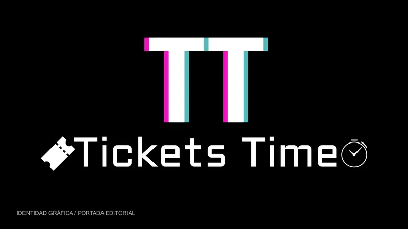
Producto de boletería digital para Latinoamérica, en desarrollo.
Tecnologías por documentar.
Identidad gráfica · Portada editorial
Sin demo ni repositorio público acreditado.
En desarrollo · Entretenimiento · Eventos
La ficha conserva el alcance acreditado del portafolio. Se utiliza el logotipo local de Tickets Time; no se atribuyen nuevas funciones ni resultados sin evidencia.
No se publica un stack específico hasta disponer de evidencia del proyecto.
Portada editorial basada en identidad local; no es una captura de producto.
Sin demo ni repositorio público acreditado.
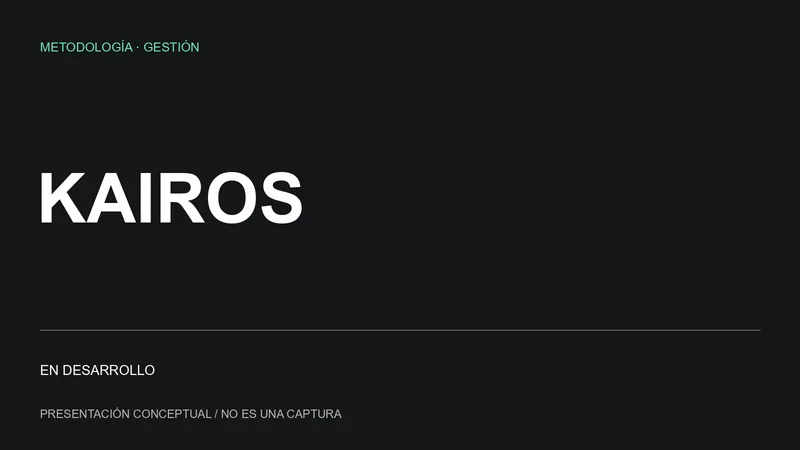
Metodología y framework de gestión de proyectos.
Tecnologías por documentar.
Presentación conceptual
Sin demo ni repositorio público acreditado.
En desarrollo · Metodología · Gestión
Propuesta metodológica de gestión, en desarrollo. No se presenta como plataforma terminada ni se atribuyen exportaciones o funciones no acreditadas.
No se publica un stack específico hasta disponer de evidencia del proyecto.
Presentación conceptual tipográfica; no es una captura de producto.
Sin demo ni repositorio público acreditado.
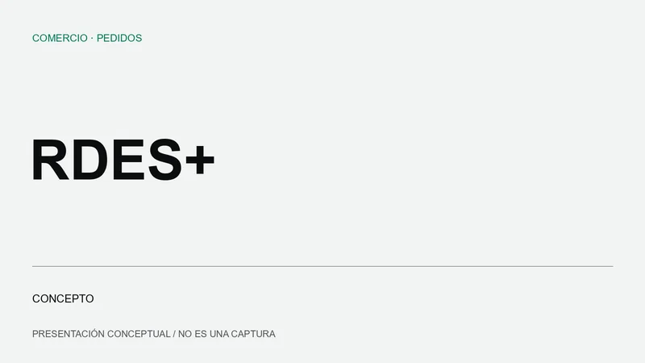
Concepto de pedidos para colmados y restaurantes.
Tecnologías por documentar.
Presentación conceptual
Sin demo ni repositorio público acreditado.
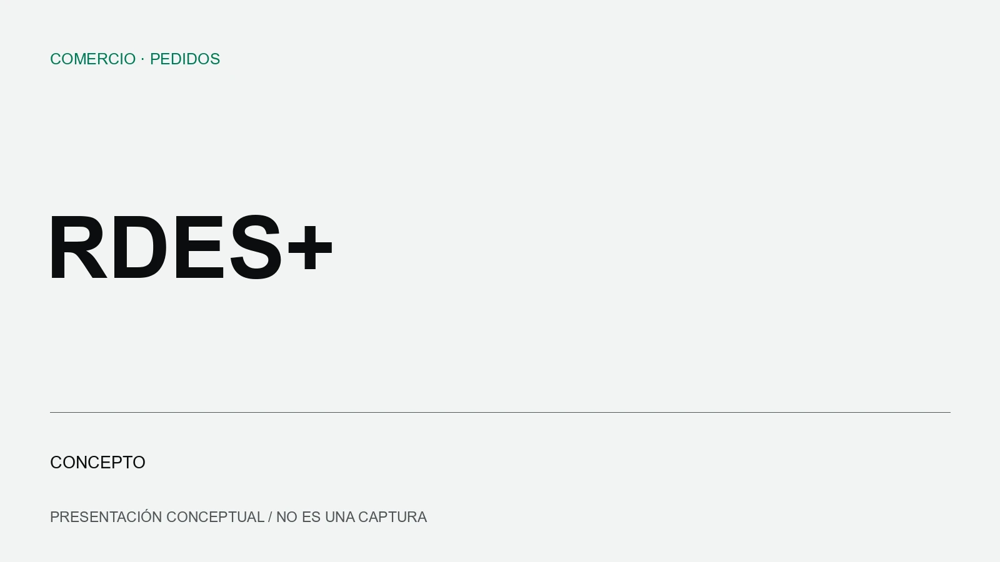
Concepto · Comercio · Pedidos
Proyecto en fase de diseño y especificación. Esta presentación describe el concepto; no demuestra una aplicación operativa.
No se publica un stack específico hasta disponer de evidencia del proyecto.
Presentación conceptual tipográfica; no es una captura de producto.
Sin demo ni repositorio público acreditado.
El estado identifica la etapa del producto. Las portadas conceptuales y las vistas DEMO se señalan por separado; no acreditan actividad ni resultados reales.
Formación · Aprendizaje continuo
Certificaciones, cursos completados, insignias y preparación, con respaldo documental. Explora las categorías y amplía cada credencial.
Selecciona otra categoría para seguir explorando.
Formación complementaria en liderazgo, inventario, contabilidad y herramientas de oficina.
Dirección técnica de StarBound Software Factory. Arquitectura, desarrollo y calidad de Shepherd Platform, con enfoque multi-tenant y Business Intelligence pastoral. Dirección técnica de proyectos como JMBooks, SBPE, PatriaPulse, KikiPay y TicketsTime bajo metodología DEVGEP+.
Responsable de calidad de todos los productos: pruebas funcionales y de regresión, compuertas de evidencia DEVGEP+ antes de cada release y seguimiento con Jira, Azure DevOps y Postman.
Desarrollos a la medida de punta a punta para clientes de la plataforma, con pruebas y despliegues incluidos.
Saneamiento de datos en SAP, análisis de rotación de inventario, reparación del Rolling Forecast y automatización del flujo de datos para operaciones de varias compañías y países.
Disponible para desarrollar aplicaciones web y móviles, productos SaaS, software a la medida, plataformas empresariales y soluciones de Business Intelligence. Integro inteligencia artificial aplicada, agentes especializados y automatización inteligente para crear sistemas más eficientes, escalables y confiables, desde la arquitectura hasta su despliegue.